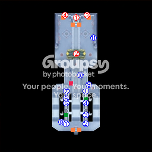

ใครรู้วิธี reskill restatus บ้างช่วยตอบทีคับ
ใครรู้วิธี reskill restatus บ้างช่วยตอบทีคับ
http://eco.froztic.in.th/archive/ecofanclub/
http://eco.froztic.in.th/archive/ecofanclub/viewtopic.php?f=15&t=13554
tanawat212 เขียน:ใครรู้วิธี reskill restatus บ้างช่วยตอบทีคับ
